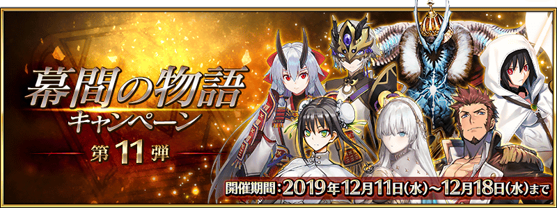
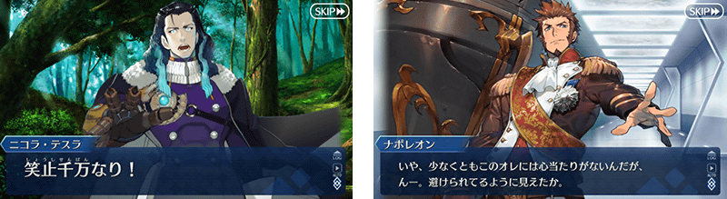
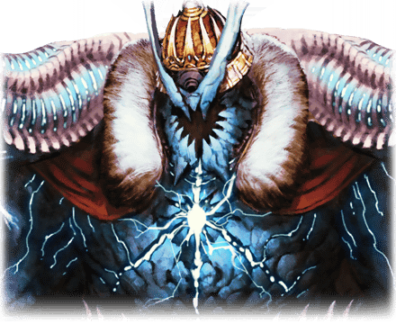
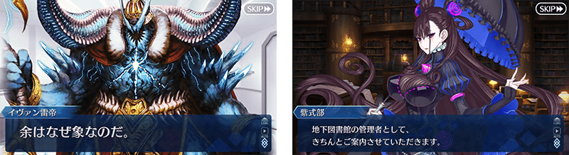
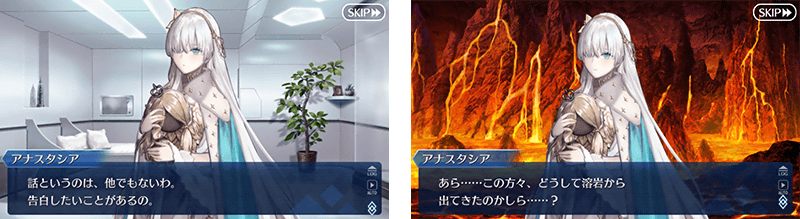
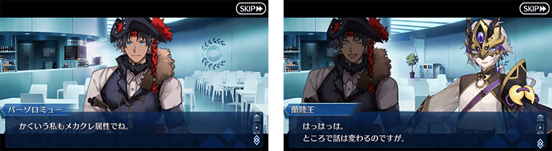
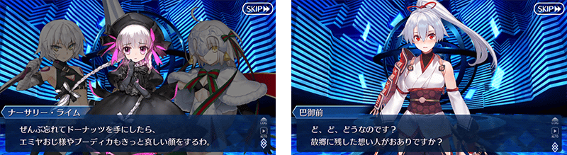
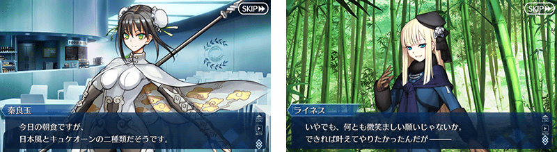
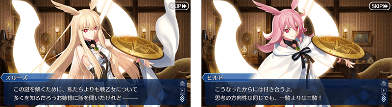

以期間限定舉辦「幕間物語宣傳活動 第11彈」。
宣傳活動舉辦中所有從者的幕間物語的AP消耗量變成1/2！
藉此機會滿足開放條件，通過喜愛從者的物語吧！
※本頁面皆為開發中圖片。會有與實際圖片相異的情況。
◆舉辦期間◆
2019年12月11日(三) 17:00～12月18日(三) 11:59
◆對象關卡◆
所有的幕間物語
※也包含自2019年12月11日(三) 17:00開放的幕間物語。
◆有關臨時維修的注意◆
在2019年12月13日(五) 0:00～4:30預定為了資料庫伺服器的安全性更新而臨時維修。
請注意維修中無法遊玩「Fate/Grand Order」。
詳情請閱覽此處的公告。
◆有關從者真名的注意◆
在2018年12月31日(二) 23:00以後新配信的主線故事及期間限定活動、一部份關卡、宣傳活動及召喚中，會顯示隱藏真名的對象從者真名。
※2018年12月31日(一) 22:59前已經配信的主線故事、復刻活動、一部份關卡中不在此限。
◆開放時間◆ 2019年12月11日(三) 17:00～
◆對象從者◆
・拿破崙
・伊凡雷帝
・安娜塔西亞
・蘭陵王
・Archer・地獄(巴御前)
・秦良玉
・瓦爾基里

|
◆關卡開放條件◆ ◆關卡通過報酬◆ |

|  |
◆關卡開放條件◆ ◆關卡通過報酬◆ |

|
◆關卡開放條件◆ ◆關卡通過報酬◆ |

 |
◆關卡開放條件◆ ◆關卡通過報酬◆ |

|
◆關卡開放條件◆ ◆關卡通過報酬◆ |

|
◆關卡開放條件◆ ◆關卡通過報酬◆ |

|
◆關卡開放條件◆ ◆關卡通過報酬◆ |
 |

其他還有，期間限定「幕間物語宣傳活動第11彈Pick Up召喚(每日交替)」同時舉辦！
關於詳情，請自下述橫幅確認。